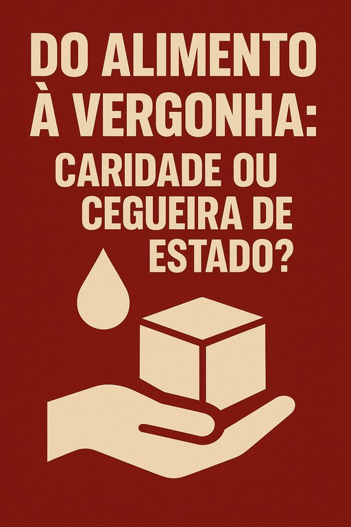

Publicado em 2025-06-02 12:35:54
“O país está mobilizado para ajudar o Banco Alimentar.”
— Marcelo Rebelo de Sousa, Presidente da República
Com esta frase, Marcelo não só revelou o tom piedoso que o caracteriza, como expôs, sem querer, o falhanço profundo do Estado português.
Porque quando um Presidente precisa de louvar a caridade como resposta à pobreza, é porque a justiça social já foi enterrada há muito tempo.
Mobilizado devia estar o país para eliminar a pobreza — não para a gerir com campanhas sazonais e sorrisos de ocasião.
Mas em vez disso, nos últimos 50 anos, as máquinas partidárias de PS e PSD tornaram-se fábricas de pobres. Criaram sistemas que:
E depois… aplaudem a caridade como se fosse virtude nacional.
A caridade virou espetáculo. E a pobreza, argumento de campanha.
Marcelo, sempre pronto a emocionar-se diante das câmaras, não fala em reformas fiscais justas, nem em políticas de habitação, nem em salários dignos.
Fala em mobilização… para dar comida.
Como se estivéssemos num país devastado pela guerra.
Mas o que nos devasta não é a guerra — é a rendição crónica à mediocridade dos mesmos de sempre.